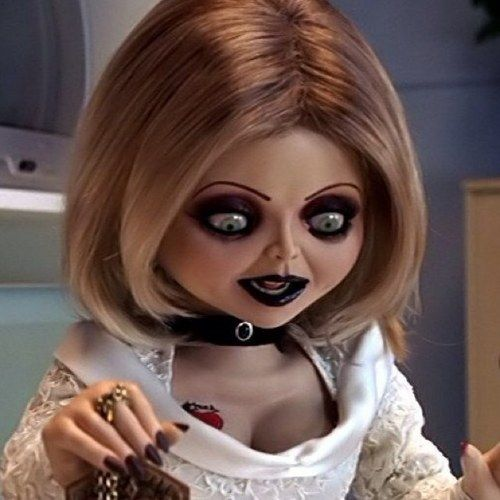
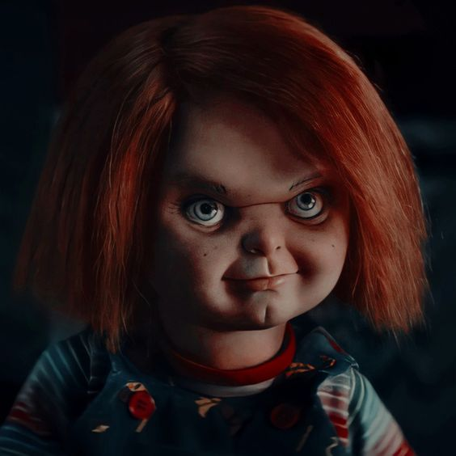
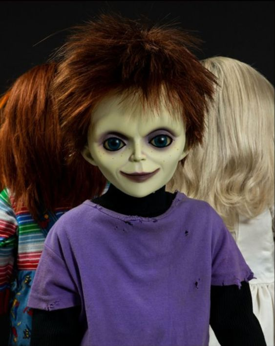

Escolha seu personagem preferido
Tiffany
Configura a parceira perfeita para Chucky, tanto em aparência quanto em violência. Possui uma sede de sangue tão grande quanto a do assassino.
Chucky
O boneco Chucky, famoso brinquedo existente no universo da franquia, contém a alma transferida de um perigoso assassino dentro de si.
Glen
Apesar de ser filho de dois psicopatas, Glen tem uma natureza majoritariamente amigável, matando apenas quando está sob forte estresse.